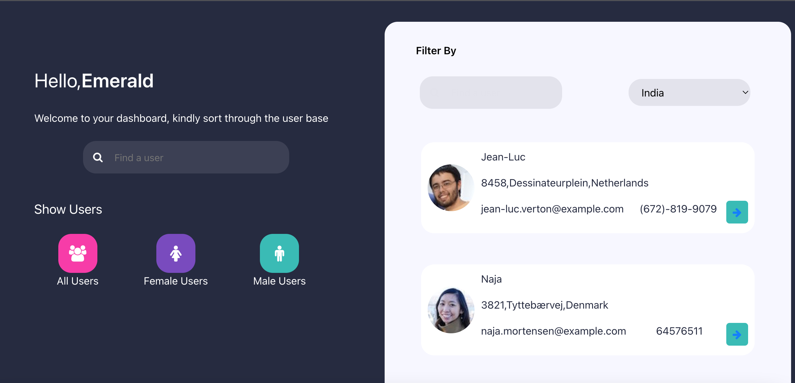
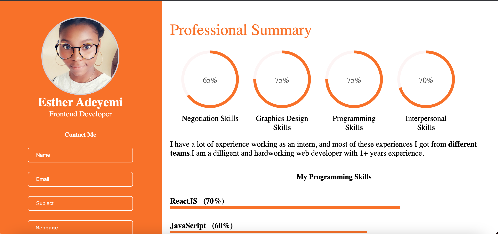

Xtarachiever
FrontEnd Developer,
creating a responsive,
interactive interfaces
I'm Esther, a front-end developer with over 2 years experience. I specialize in interactive websites for mobile and web based applications
I worked at dev placement where developers are selected and placed in different companies to serve as interns for 3 months. I had the opportunity to work at Room 4010, where I partnered with other programmers to create websites that tracked the curriculum for students and teachers. I also advanced to the HNGi8 finals, where I joined forces with other programmers to create a Slack clone.
Featured Projects
A collection of past projects:
To-do-list
This site helps to store all the things that a user wants to keep track of and free way to organize plans, projects and more.

Decagon Dashboard
This site helps to store all the things that a user wants to keep track of and free way to organize plans, projects and more.

Resume
Based on a job assigned during the HNGi8 internship, this website was created. It demonstrates the programming language I know well.

Easy Bank
This site shows details of easybank digital banking. During my internship at JSMINNA, I was handed this site as a frontend challenge.
Proficient Languages:
- ReactJS
- Javascript
- CSS, Sass
- TypeScript